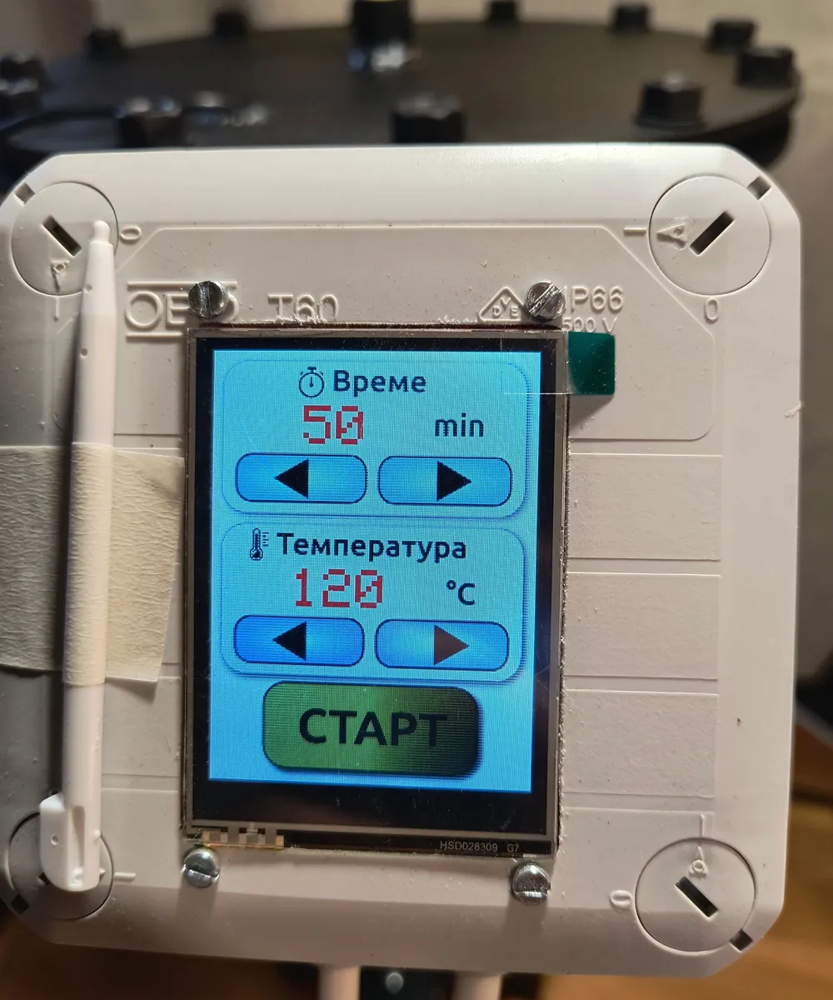
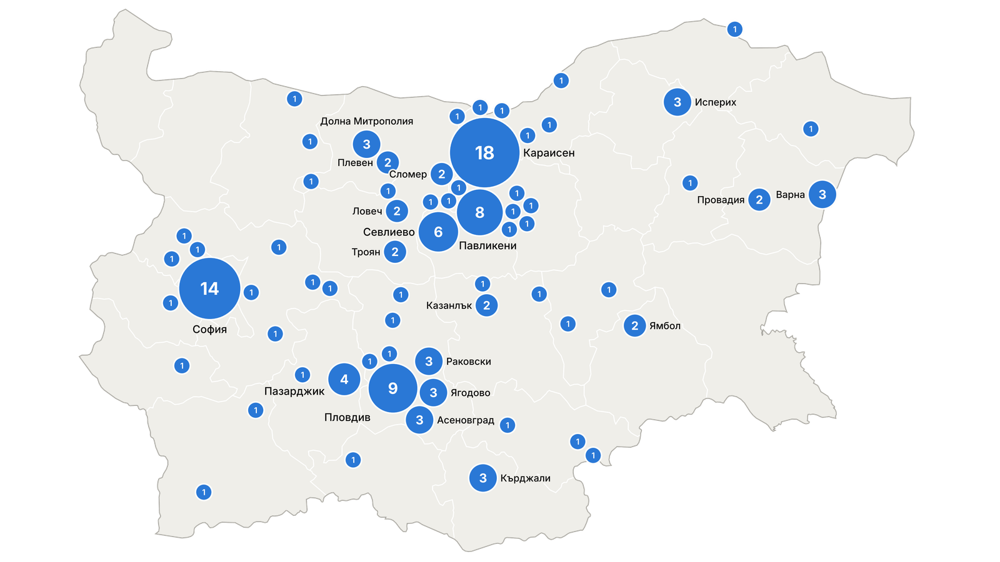

Автоклав за домашни консерви
21 буркана на едно зареждане, до 120 °C, с тъчскрийн контролер. Правим го в нашата работилница в Караисен.
Какво представлява
Нагласяте градусите и минутите. Останалото е негова работа.
Електрически автоклав за домашно приготвяне на консерви. Работи с пара под налягане и стига до 120 °C — температурата, при която месото, рибата и готовите ястия се стерилизират сигурно. Със същия уред се приготвят и зеленчуци, туршии и компоти на по-ниски температури.
Задавате само температура и време на тъчскрийн контролера, монтиран на самия автоклав. Той загрява, поддържа зададената температура, отброява времето и изключва нагревателя, когато програмата свърши.
Контролерът се продава и отделно — попитайте ни.
- 21 буркана по 720 мл на едно зареждане
- Температура от 50 до 120 °C
- Таймер за времето на автоклавиране
- Тъчскрийн контролер, монтиран на автоклава
- Работа с пара под налягане
- Електрическа мощност 2 kW

Как протича едно зареждане
Четири стъпки от суровия продукт до готовата консерва.
Пълното ръководство — с всички стъпки, снимки и правила за безопасност — е на отделна страница.
Работа с автоклаваЗаредете
Налейте вода до под подложката, наредете бурканите и затегнете капака.
Задайте режима
Изберете температура и време според рецептата и натиснете СТАРТ.
Затворете крана
При 97 °C контролерът ви подсеща да затворите крана. Оттам нататък работи сам.
Оставете да изстине
След „Готово!“ изчакайте температурата да падне под 60 °C и отворете.
Къде работят
Над 140 автоклава вече работят из цяла България.
От Караисен до Кърджали и от София до Варна. Всяка точка на картата е кухня, мазе или малка работилница, в която зимнината се прави с наш автоклав.



Искате да го видите как работи?
Елате в работилницата след кратка уговорка — ще заредим автоклава пред вас и ще отговорим на всички въпроси.
- Автоклави, дърво, котли и горелки 0889 906 296 Боян Тонков · bt@tonkov.eu
- Мониторинг и контрол 0883 519 006 Валентин Тонков · vt@tonkov.eu